Advanced Building Revue 05: Sbahns and city networks
Sbahns. We don’t use them in every pax game and even pax games aren’t all that often. So creating a Sbahn doesn’t get that much attention, or that much experience from us. On the other hand, creating a good Sbahn is a very responsible task because mostly the rebuilds and corrections of a Sbahn require nuking a major part of the city. In this article I am going to focus on some basic criteria defining a proper Sbahn, talk about some aspects that affect Sbahn behaviours and last but not least, I would like to show some types in action, searching through our archives.

The Purpose
Before we actually start building a Sbahn, we should think about things we want it to do. First of all, the goal of a Sbahn is to get as much pax from the city as possible and bring it to the ICE trains, also often reffered to as ML or backbone trains in our games. The Sbahns can be considered as a whole SL, or just a transfer station, being connected to the ML. (doesn’t have to connect directly). Their reason is to have a nice city network feeding one station, so we don’t have to make many ICE stations in the city. Another purpose/goal of Sbahn is to allow the city grow, thus leaving as much space for the city as possible but on the other hand, we still want to cover all of the buildings into our catchment area.
Savegames
Because I will be showing examples from some of our pax games from the archives, here you can quickly download all of them so you don’t have to search :P. Keep in mind though that there are plenty more games to download and study so I recommend to search through the archives by yourself :P.
Overall Tips
First of all I will note some tips that apply to all kinds of Sbahns and are the essential basics to always keep in mind.
Catchment Areas
The first thing to work with when building a Sbahn is the catchment area of stations. Before you start building, see how large catchment area does each vehicle type stationa have, and use it accordingly. We basically want as high coverage of the city as possible. There are three styles how to achieve 100%:
Frequent Stations
Probably the most intuitive and also the hardest thing to achieve is building an intensive Sbahn that covers all of the city itself. The problem is that we often end up with a huge amount of rails, occupied with a few buildings. 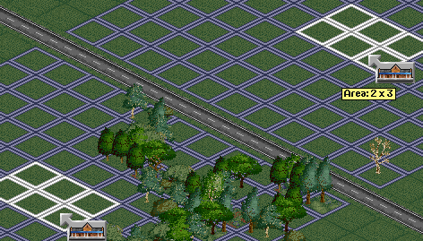
Every building here will get served. Note that we don’t need to serve the road.

Feeders
An awesome combination of trains + trams (or even busses in suburbs) can take huge amounts of pax from a city. You just have to build a less extensive train network (or at least – with less splits into stations, therefore you can reach higher capacity for certain stations). And then you can transfer to the train stations by trams from the out of train-stations coverage areas. Only be careful so the trains can still cope with the inflow of pax the trams generate :P.
Station Walking
A very lazy and ugly solution. Basically trams do almost the same and are more fun. Also, you can make trams full load in their stations, so there is always a train loading, while if you stationwalk from one station, ther don’t have to be trains always loading. A boring and lazy solution I don’t really like. 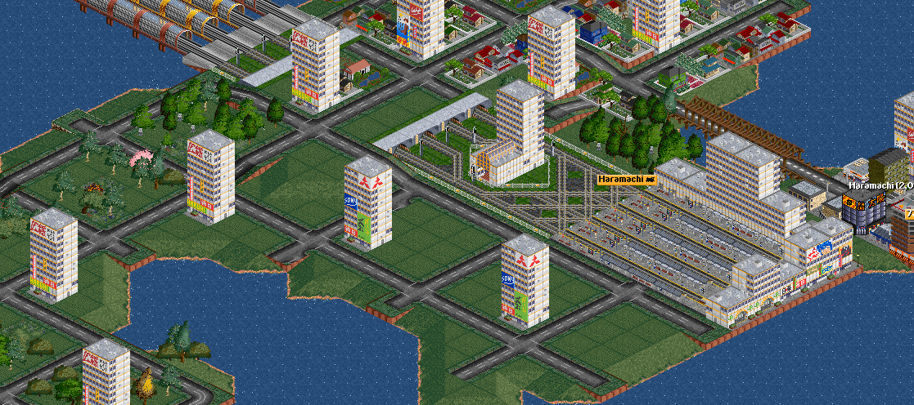
Typical station walking in Japan – by skyscrapers 🙂 this one is from psg 151.

See to the future
When you build Sbahns, you usually just build rails, and then let the city fil in there. That way, you have to build something you don’t really know if it will work. It’s good to have some secondary solutions, or escape mechanisms out of trouble prepared for future. Also, Sbahns often need expanding 🙂 not in terms of making a LL_RR inside of city, but in terms of spreading over larger area, as city grows more (if you want it to). So it is a good thing to be ready for some expanding :). In most cases it is nice if a Sbahn builder takes care of that area himself so he can imagine into the future without anyone else interrupting his plans by changing something.
Build as needed
In the city centers, you often want to keep your construction compact to allow as many buildings as possible, while still under your station coverage. It is normal that some Sbahn tracks don’t need our proper building conventions so you can save some double tunnels, braking areas, CLs, and whatever else. Be bold and try to expect, what you really need and what is just unneccessary. 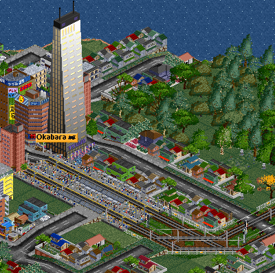
This worked, nothing was wrong. It just saved a few buildings for the city. (note that there also is very low traffic)

Roads are your weapon
Since we never allow cities to build their own roads (because they screw it up), it is also our task to build roads. Roads are an interesting element in Sbahn-building. A good thing is to get road outside a catchment area, so it provides houses, but the road itself isn’t “catched”. 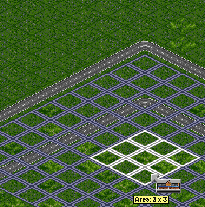
Also an important thing is to space out roads correctly, so we have buildings everywhere but there aren’t too many roads. I personally like 2×2 grid – or just that every tile where is supposed to be a building has to be neighbored by a road. But 3×3 works in city centers too.

Tunnels and Bridges
Tunnels can make a lot of magic because you can dig them under buildings, thus not damaging the city. Definitely think about tunnels if you are planning to use some kind of logic – you can just teleport the logic mechanisms out of the city completely, just by using tunnels.
Bridges are also very considerable though! When building bridges, think about overbridging roads that go in the same direction as the bridge, that way not harming any buildings because you have the road under the bridge.
Types of solution
Vehicles
Because the city traffic can consist of not only trains, I will note a few sentences about different vehicle types, their qualities and usage.
Trains
What else is our core vehicle? Also in Sbahns, trains are your best friend. Building an effective train Sbahn isn’t an easy task though. First of all, always look at the trains you are going to use! See their speed and capacity first, but also don’t forget about often underrated stats like wagon loading times, or train acceleration. It is quite hard to define what exactly do we want from a Sbahn train simply because every Sbahn can behave differently and need various types of trains. One important note though: If you ever played a pax game with DB set and used the transrapids, I am sure you noticed their insane capacity of 120 passengers per carriage, incuding engines, plus having insane acceleration, low running cost and high speed. This is an unmatched engine for creating Sbahns, in my opinion making it boring – because it is just too good and you can afford to do almost anything and the Sbahn will still work well! But the most important thing is: whenever you are looking for other Sbahns for inspiration, be aware of checking what trains go there because if you choose some different ones, it might work differently. 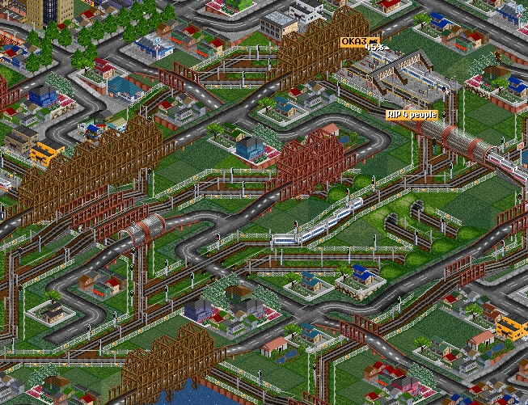
Public server game 164 city network by Mark.

Trams
Trams are super-helpful in Sbahns! Their best usage is in areas where your trains can’t reach by their catchment areas. Thanks to high capacities of most trams, their service doesn’t fail even in skyscraper city centers. Also, their huge advantage is that they don’t need almost any infrastructure, they just operate on roads. This is super effective when you actually want the town to grow and not to bury it under rails. There is one huge problem though. The tram drivers are extremely dumb and you have to be super careful while building tram tracks, otherwise the trams could gridlock very easily. You can see a good example how to build trams in PZ 12, station HIM feeders. 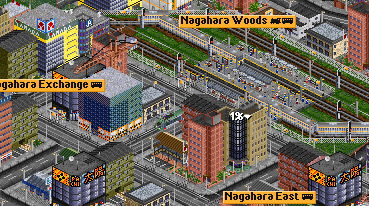
Here we can see a cute cooperation of trams and trains.

Busses
Building a bus Sbahn has some advantages, first of them is that it boosts the town growth. The other one is – it is easy, you don’t have to build even rails for trams! On the other hand, most busses tend to have very low capacities, therefore being pretty inefficient in city centers. A bus service is good for city edges where traffic is lower. The lack of tram rails makes busses go just as they want, which could be an issue too! So be careful when setting up a bus line or just use waypoint-stations to make them move where you want them. 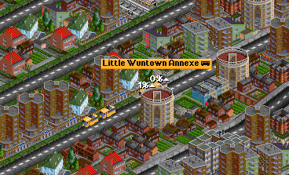
Bus service in suburbs.

Ships
As weird as it sounds, ships are also a very formidable Sbahn vehicle. If you manage to have a canal network in your city, the ships have endless capacity (because they don’t collide with each other). On the other and, this is often quite boring and ships lag :P. Thanks to their capacity, they are viable for city centres or – naturaly – for islandish parts of city. Oh … and use the damn buoys! 🙂
Aircraft
To be honest, I haven’t seen an effective air Sbahn and I doubt it’s existence, since the airports have a limited throughput and they eath up a huge chunk of space in the city. (and helicopters don’t really carry much :P)
Vehicle orders
Each Sbahn can behave differently depending on what orders you give to the vehicles. They all share one order: ICE terminal (transfer and leave empty). Sbahn orders have also one downside: you can’t use unordered trains 🙁 *sad V453000* 🙁 because you need at least 1 order to make them transfer the pax. Once it gets to some effective Sbahns, I know of a few types of solutions:
Direct orders with Full Load
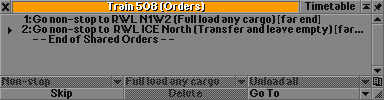 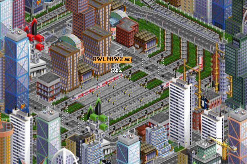
As you can see in the image, trains just have a set location, where they wait for full load of passengers. This is a very effective solution, being good in most cases. It has a downside though – on larger capacity Sbahns, you will like to send more trains to a certain station, than the actual count of the station’s platforms/waiting spaces. This can become an issue and trains can clog up for a moment. As long as you make sufficient waiting spaces, you are safe 🙂 You can see this style in many games, the insane network built by Mark in psg 140 (Rumblewell city).


Direct orders with Load if available
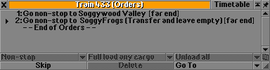 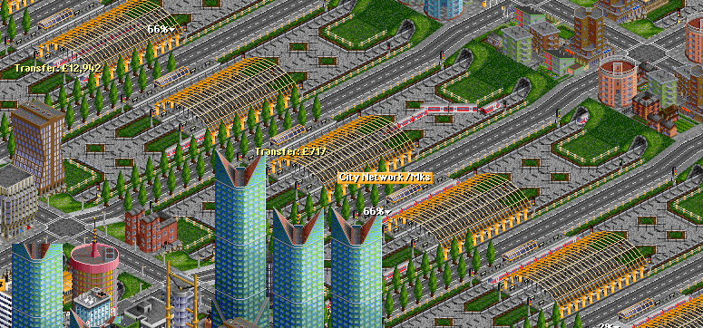
In this case, your trains just come into stations and leave when pax stops flowing or they are full already. This is usually not effective enough, because trains can go almost-empty but with trains like transrapids, it works quite nicely.
For example the city network by Mks in psg 157 (station SoggyFrogs), being a typically effective style for this type of orders.


Multistation direct orders with Load if available
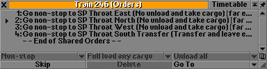 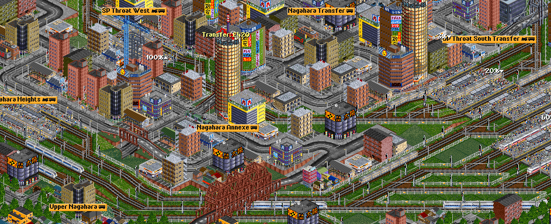
First of all, it is absolutely neccessary to make the orders “no unloading” to make trains pick up additional pax, but prevent dumping the already-collected. This is being used for multiple-station service. Trains just go in a loop and collect what they can. It’s greatest advantage is that it is quite jam-safe and also, you can have less order groups of trains. The downside it can cause is that some stations can be less served, because this network often is a loop, where trains go from station A to station X via B, C, D, etc. and when they approach X, they are full already. But that can be mostly solved just by increasing the Sbahn capacity, making them able to serve all stations. A very nice example of this style can be seen in game 164, Spider Pig Central station feeders built by Nickman.


Conditional orders
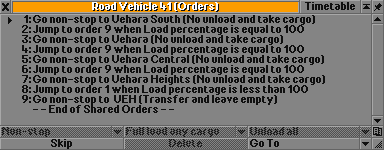 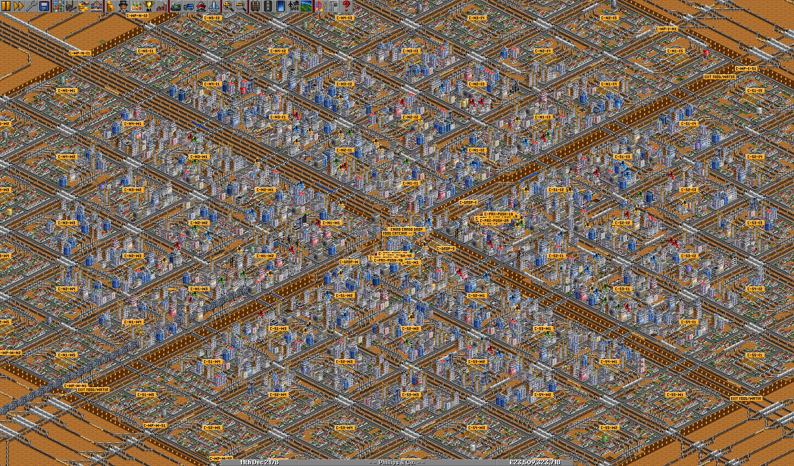
The conditional orders are a very flexible technique of how to deal with Sbahns. You can use them for very different Sbahn styles and often they work very nicely. For example enhancing the Direct orders with Load if available style like this in a tram-based Sbahn like this can be very efficient, making trams shortcut their way towards their drop, whenever they reach a certain amount of pax loaded. Experiment with these orders and be creative! They can improve the capacity of the whole greatly. As various examples As an inspiration you can check out the super insane Cairo network in psg 154, built by many.
This is how a Sbahn can also look.


Self Regulation
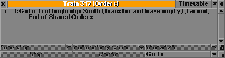 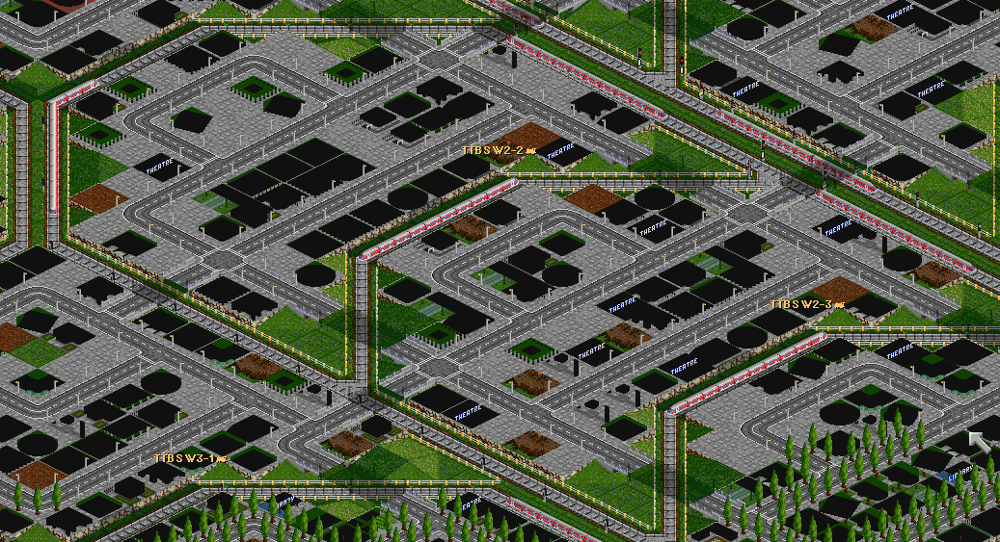 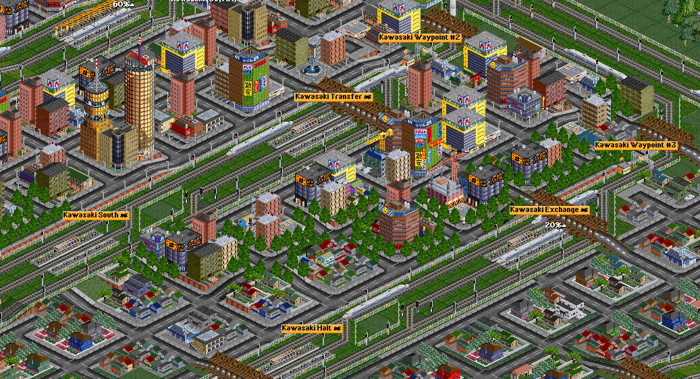
An order list consisting of mostly just one order: Transfer and leave empty. Making an self-reg Sbahn isn’t an easy task. First issue you will encounter is how to make trains load for long enough in order to make them full. Here we get to a major clash with differences between trainsets. Especially the carriage loading times are important now. Solution number one is to have trains load slowly enough, to make pax flow into the stations fast enough, to make the trains stay there and keep loading pax. As long as the Sbahn is effective, you don’t neccessarily need to have them full. The issue is that you need them to go into all stations! If you have 5 stations on the self regulation net and the trains load and unload too fast, they can keep visiting only the first 3 ones! And you really don’t want to make a 1->5 flipflop-like thingy in the city center. You can also make just-enough stations, to the trains go to all of them, but they don’t wait in either. A brilliant example of this style is Thijs’s Sbahn in PSG 140.
Another different usage of self regulation can be seen in psg 164 – Yamaoka network built by ^Spike^.
A possible solution of this is to make a timer-controlled entrance. You can see this exampled in PZ12, SHI Sbahn. Then it is just about how long times you set, how many platforms you have, and so on. Everything demands some solving on the fly. Luckily you will have to only set different timer values and not rebuild the city network :). Also you can use dummy trains, but again, these eat up some space you could use for some buildings.


Conclusion
Sbahns are a huge bunch of fun and their construction is exciting, especially because often you just don’t know how it will turn out. Mostly because testing a Sbahn isn’t that quick as testing some mechanisms like balancers, or station entrances, or anything else. Try to be creative and make such Sbahns that can take as much pax as possible. And also: I added some few examples which I think are nice to see for inspiration. This article should give you a good overview of some types of Sbahns we use, but there can’t be better inspiration than looking through the archives yourself and of course – trying to build some yourself. Experiment and make something better than I showed you here ;). Now go get those waiting crowds out of the town already! 🙂
Categories: Community News
Mucht June 13, 2010 18:53
What a great Article!
V453000 June 14, 2010 09:53
Woo, comment from Mucht himself! Woo 🙂
Mark June 14, 2010 10:09
I love reading your advanced building revues, this one is again very thorough and seems to cover pretty much every aspect of sbahn building, awesome job
V453000 June 15, 2010 00:24
How can I respond to that? 🙂 Thanks, I am doing my best 🙂
Hribek February 28, 2011 15:24
I just read this and I liked it a lot. Now I’m off to experiment.